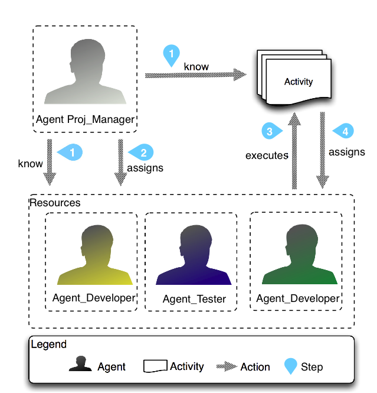

|
Gestion de ProjectL’intérêt de la simulation multi-agent pour l'appui à la gestion de projet (This page is available in english.)

ContexteLes techniques pour soutenir le développement de projets de logiciels et pour décrire la qualité des résultats ont reçu une attention particulière de la communauté de la recherche. Car souvent, les projets de logiciels n'ont pas atteint les résultats escomptés en termes de délais d'exécution et de qualité du produit final.ObjectifNotre SMA a pour objectif d'aider les gestionnaires de projet dans leur prise de décision pour la création de logiciels. Ce modèle est basé sur les domaines du PMBOK tels que le coût, le temps, la qualité et des ressources humaines.MéthodeNous présentons un exemple illustratif tirée de notre expérience sur des projets réels de développement de logiciels, expériences menées au sein de notre groupe de recherche au LES (Laboratory of Software Engineering de l'université PUC-Rio). Cette exemple illustre les avantages et les inconvénients de l'utilisation de la simulation multi-agents pour laide a la décision aux responsables de projet.RésultatsNous avons créé un modèle de simulation et des scénarios associés qui permettent a un gestionnaire de projet d'analyser les options stratégiques au long du projet. Chaque option est basée sur les pratiques du PMBOK permettant au gestionnaire d'étudier le meilleur scénario qui réponde a ses besoins en termes de coût, de temps et de qualité.ConclusionsCertains facteurs sont cruciaux pour le succès ou l'échec d'un projet. Les décisions prises par le gestionnaire de projet constituent des facteurs qui déterminent si les objectifs du projet sont réalisables ou non. Grâce a laide apporter par le SMA pour simuler des scénarios alternatifs, nous avons acquis la conviction que cette approche peut contribuer a la compréhension des phénomènes qui se produisent au cours d'un projet de développement de logiciel et fournit une aide réelle pour le chef de projet.
PMBOK, A Guide To The Project Management Body Of Knowledge - PMBOK Guides - Fifth Edition, Project Management Institute, 2013.
|
|